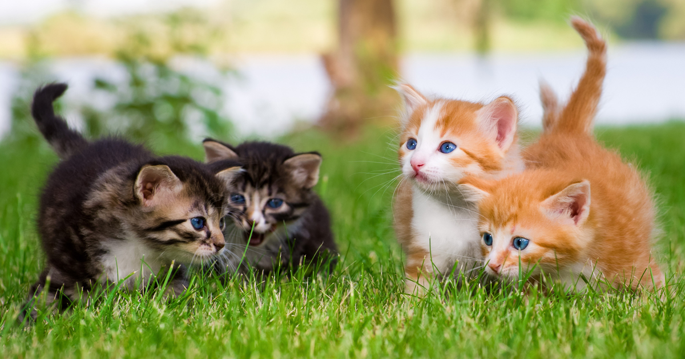

L'Adoption Center
Pet Adoption Agency
Puppy of the Week
 This is the puppy of the week! His name is White and he is living with a loving family of 4. The mom and dad have two children who are age 4 and age 6. These two children absolutely love playing with White because he is a very gentle and easy-going dog. The two kids love taking White for walks and taking him outside. The family is currently training him and the two kids love feeding him treats when he does something correct. White has just learned to sit, shake, and rollover within the first week of living with his family. That is why White is the puppy of the week!
This is the puppy of the week! His name is White and he is living with a loving family of 4. The mom and dad have two children who are age 4 and age 6. These two children absolutely love playing with White because he is a very gentle and easy-going dog. The two kids love taking White for walks and taking him outside. The family is currently training him and the two kids love feeding him treats when he does something correct. White has just learned to sit, shake, and rollover within the first week of living with his family. That is why White is the puppy of the week!
Orange is the New Black

These lovely kittens made this story because they are perfect for the title. Nothing is better than watching two orange and two black cats play outside on a lovely summer day. These kittens have lived next door to each other for 4 years and enjoy nothing better than playing outside together. The owners each own two of them, but they basically live with each family because they are that close!
Healthy Pets
In order to keep your pets healthy make sure you are getting all of their shots after adoption and getting them the right food that they are used to eating. If your pet is not acting like normal make sure to take them immediately to the vet! Nothing is more terrible than seeing a sick pet. Having the correct cages, crates, kennels, cleaning supplies, collars and leashes because these are essential to keeping a healthy lifestyle for your pets.